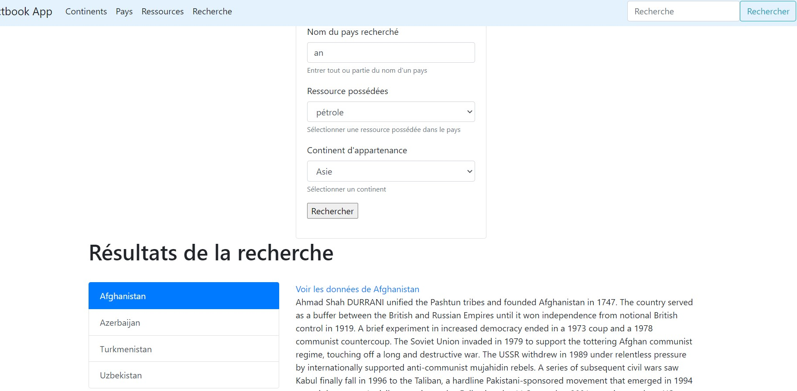
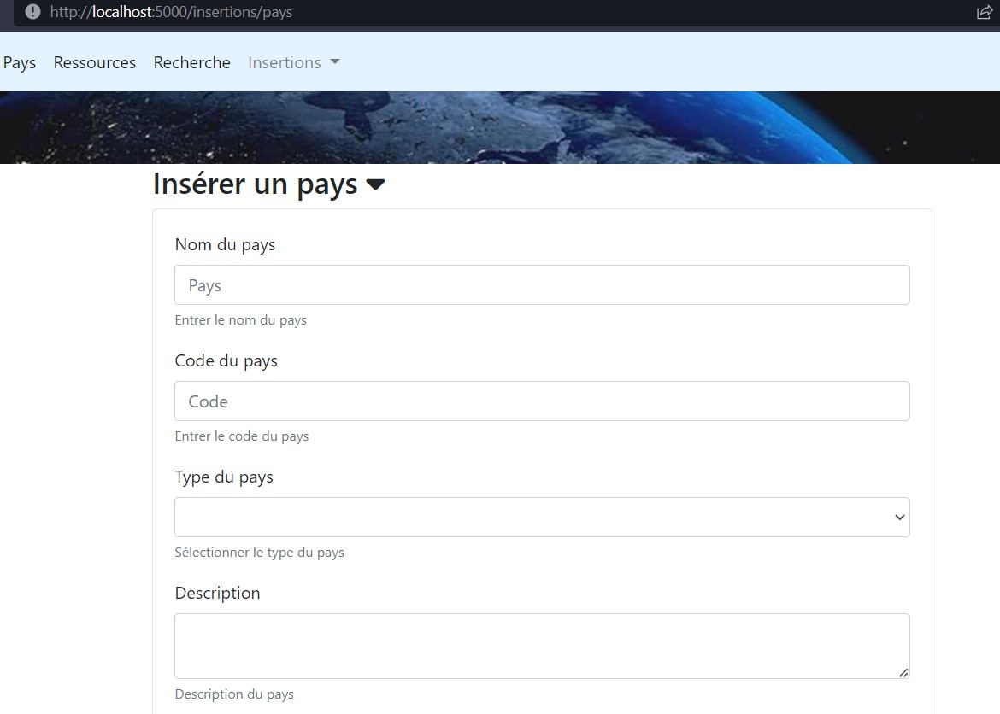
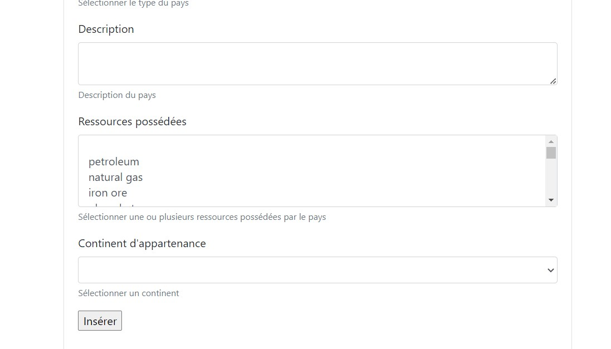

L'objectif de ce TD est d'implémenter des formulaires en POST afin que l'utilisateur puisse interagir avec les données.
Afin que tout le monde réalise ce TD sur une application Flask sans erreurs et correctement configurée:
.envLe but de cette partie est d'obtenir, sur la future page /recherche, un formulaire qui permette de filtrer sur le nom du pays, une de ses ressources, son continent.

Suivant la méthodologie décrite en cours, suivre les quatre étapes suivantes:
De même que SQLAlchemy est une librairie utilisée dans Flask-SQLAlchemy pour interagir avec une base de données, il existe une librairie Flask-WTF utilisant WTForms pour la gestion des formulaires. Cette librairie facilitera le développement en:
D'abord, il faut installer Flask-WTF:
pip install flask-wtf
Les classes représentant nos formulaires sont finalement des modèles au même titre que celles de la base de données. C'est pour cela que l'on peut les ranger dans app/models/ dans un fichier formulaires.py. Ces modèles détermineront quelles données nos formulaires vont capturer, de même que les logiques de validation de ces dernières.
Comme pour toute extension, Flask-WTF nécessite une petite configuration initiale avec 2 variables d'environnement supplémentaires:
WTF_CSRF_ENABLE: par défaut à True; si elle est activée, cette option permet de se prémunir contre l'attaque "Cross-site request forgery". Sauf exception, cette option doit être toujours activée pour assurer la sécurité des échanges entre le client et le serveur, et la sécurité du site.SECRET_KEY n'est demandé que si l'option précédente est activée; cette clé créé un jeton cryptographique qui servira à valider les formulairesEn utilisant la documentation et celle-ci, écrire la classe Recherche() représentant un formulaire contenant les entrées suivantes:
('PET', 'pétrole'), ('GOL', 'or')('Europe', 'Europe'), ('Asia', 'Asie'), ('Africa', 'Afrique')Les formulaires pouvant être utilisés à divers endroits de l'application, il convient de les considérer comme des "partials".
partials/formulaires/recherche.html: la structure HTML est déjà faite, il faut simplement injecter les bonnes variables Jinja aux bons endroits et paramétrer correctement la balise formpages/resultats_recherche.html: c'est ce template qui sera renvoyé par la future route. Les commentaires dans le template doivent aider à identifier le ou les endroits où inclure le template du formulaire
/recherche depuis la barre de navigation), la page /recherche affichera alors seulement le formulaireVoici ci-dessous la route écrite:
from ..app import app, db
from flask import render_template, request
from ..models.factbook import Country
from ..models.formulaires import Recherche
from ..utils.transformations import clean_arg
...
@app.route("/recherche", methods=['GET','POST'])
@app.route("/recherche/<int:page>", methods=['GET','POST'])
def recherche(page=1):
form = Recherche()
# récupération des éventuels arguments de l'URL qui seraient le signe de l'envoi d'un formulaire
nom_pays = clean_arg(request.form.get("nom_pays", None))
ressource = clean_arg(request.form.get("ressources", None))
continent = clean_arg(request.form.get("continents", None))
# initialisation des données de retour dans le cas où il n'y ait pas de requête
donnees = []
if form.validate_on_submit():
# si l'un des champs de recherche a une valeur, alors cela veut dire que le formulaire a été rempli et qu'il faut lancer une recherche
# dans les données
if nom_pays or continent or ressource:
# initialisation de la recherche; en fonction de la présence ou nom d'un filtre côté utilisateur, nous effectuerons des filtres SQLAlchemy,
# ce qui signifie que nous pouvons jouer ici plusieurs filtres d'affilée
query_results = Country.query
if nom_pays:
query_results = query_results.filter(Country.name.ilike("%"+nom_pays.lower()+"%"))
if ressource:
resource = db.session.execute(text("""select a.id from country a
inner join country_resources b on b.id = a.id and b.resource == '"""+ressource+"""'
""")).fetchall()
query_results = query_results.filter(Country.id.in_([r.id for r in resource] ))
if continent:
map = db.session.execute(text("""select a.id from country a
inner join country_map b on b.id = a.id and map_ref == '"""+continent+"""'
""")).fetchall()
query_results = query_results.filter(Country.id.in_([m.id for m in map] ))
donnees = query_results.order_by(Country.name).paginate(page=page, per_page=app.config["PAYS_PER_PAGE"])
# renvoi des filtres de recherche pour préremplissage du formulaire
form.nom_pays.data = nom_pays
form.continents.data = continent
form.ressources.data = ressource
return render_template("pages/resultats_recherche.html",
sous_titre= "Recherche" ,
donnees=donnees,
form=form)
Le template de la route a déjà été rempli lors de l'inclusion du template du formulaire. La route est accessible à localhost:5000/recherche.
Développer une route POST /insertions/pays qui permette d'ajouter un pays dans la base de données selon la méthodologie vue précédemment. Le résultat attendu est :
 
partials/formulaires/insertion_pays.htmlPOST /insertions/pays dans le module "insertions" des routes avec la fonction insertion_pays()pages/insertion_pays.html est déjà fourni